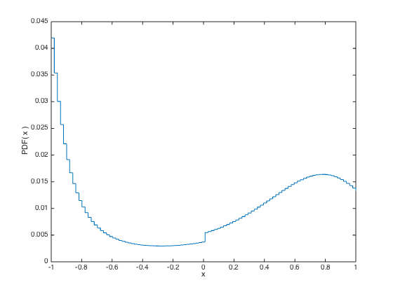

% Section 7.2, Figures 7.2-7.3 % Boyd & Vandenberghe, "Convex Optimization" % Originally by Lieven Vandenberghe % Adapted for CVX by Michael Grant 4/11/06 % % We consider a probability distribution on 100 equidistant points in the % interval [-1,1]. We impose the following prior assumptions: % % -0.1 <= E(X) <= +0.1 % +0.5 <= E(X^2) <= +0.6 % -0.3 <= E(3*X^3-2*X) <= -0.2 % +0.3 <= Pr(X<0) <= 0.4 % % Along with the constraints sum(p) == 1, p >= 0, these constraints % describe a polyhedron of probability distrubtions. In the first figure, % the distribution that maximizes entropy is computed. In the second % figure, we compute upper and lower bounds for Prob(X<=a_i) for each % point -1 <= a_i <= +1 in the distribution, as well as the maximum % entropy CDF. % % Represent the polyhedron as follows: % A * p <= b % sum( p ) == 1 % p >= 0 % n = 100; a = linspace(-1,1,n); a2 = a .^ 2; a3 = 3 * ( a.^ 3 ) - 2 * a; ap = +( a < 0 ); A = [ a ; -a ; a2 ; -a2 ; a3 ; -a3 ; ap ; -ap ]; b = [ 0.1 ; 0.1 ;0.5 ; -0.5 ; -0.2 ; 0.3 ; 0.4 ; -0.3 ]; % % Compute the maximum entropy distribution % cvx_expert true cvx_begin variables pent(n) maximize( sum(entr(pent)) ) sum(pent) == 1; A * pent <= b; cvx_end % % Compute the bounds on Prob(X<=a_i), i=1,...,n % Ubnds = zeros(1,n); Lbnds = zeros(1,n); for t = 1 : n, cvx_begin quiet variable p( n ) minimize sum( p(1:t) ) p >= 0; sum( p ) == 1; A * p <= b; cvx_end Lbnds(t) = cvx_optval; cvx_begin quiet variable p( n ) maximize sum( p(1:t) ) p >= 0; sum( p ) == 1; A * p <= b; cvx_end Ubnds(t) = cvx_optval; disp( sprintf( '%g <= Prob(x<=%g) <= %g', Lbnds(t), a(t), Ubnds(t) ) ); end % % Generate the figures % figure( 1 ) stairs( a, pent ); xlabel( 'x' ); ylabel( 'PDF( x )' ); figure( 2 ) stairs( a, cumsum( pent ) ); grid on; hold on d = stairs(a, Lbnds,'r-'); set(d,'Color',[0 0.5 0]); d = stairs(a, Ubnds,'r-'); set(d,'Color',[0 0.5 0]); d = plot([-1,-1], [Lbnds(1), Ubnds(1)],'r-'); set(d,'Color',[0 0.5 0]); axis([-1.1 1.1 -0.1 1.1]); xlabel( 'x' ); ylabel( 'CDF( x )' ); hold off
Successive approximation method to be employed. SDPT3 will be called several times to refine the solution. Original size: 308 variables, 109 equality constraints 100 exponentials add 800 variables, 500 equality constraints ----------------------------------------------------------------- Cones | Errors | Mov/Act | Centering Exp cone Poly cone | Status --------+---------------------------------+--------- 100/100 | 7.368e+00 2.690e+00 0.000e+00 | Solved 100/100 | 1.280e+00 1.428e-01 0.000e+00 | Solved 100/100 | 2.345e-01 4.365e-03 0.000e+00 | Solved 99/ 99 | 2.735e-02 5.851e-05 0.000e+00 | Solved 96/ 98 | 2.851e-03 5.894e-07 0.000e+00 | Solved 0/ 0 | 0.000e+00 0.000e+00 0.000e+00 | Solved ----------------------------------------------------------------- Status: Solved Optimal value (cvx_optval): +4.38629 2.26172e-11 <= Prob(x<=-1) <= 0.329406 2.88711e-11 <= Prob(x<=-0.979798) <= 0.344777 2.25055e-10 <= Prob(x<=-0.959596) <= 0.360771 1.63251e-10 <= Prob(x<=-0.939394) <= 0.377365 9.05212e-12 <= Prob(x<=-0.919192) <= 0.394532 4.78858e-11 <= Prob(x<=-0.89899) <= 0.4 2.63852e-11 <= Prob(x<=-0.878788) <= 0.4 6.29578e-11 <= Prob(x<=-0.858586) <= 0.4 5.85922e-10 <= Prob(x<=-0.838384) <= 0.4 4.11204e-11 <= Prob(x<=-0.818182) <= 0.4 2.53223e-10 <= Prob(x<=-0.79798) <= 0.4 0.0116304 <= Prob(x<=-0.777778) <= 0.4 0.0331953 <= Prob(x<=-0.757576) <= 0.4 0.0519157 <= Prob(x<=-0.737374) <= 0.4 0.0701091 <= Prob(x<=-0.717172) <= 0.4 0.0859495 <= Prob(x<=-0.69697) <= 0.4 0.0998612 <= Prob(x<=-0.676768) <= 0.4 0.112141 <= Prob(x<=-0.656566) <= 0.4 0.123045 <= Prob(x<=-0.636364) <= 0.4 0.132778 <= Prob(x<=-0.616162) <= 0.4 0.141527 <= Prob(x<=-0.59596) <= 0.4 0.149418 <= Prob(x<=-0.575758) <= 0.4 0.15655 <= Prob(x<=-0.555556) <= 0.4 0.163015 <= Prob(x<=-0.535354) <= 0.4 0.168895 <= Prob(x<=-0.515152) <= 0.4 0.174283 <= Prob(x<=-0.494949) <= 0.4 0.179205 <= Prob(x<=-0.474747) <= 0.4 0.18371 <= Prob(x<=-0.454545) <= 0.4 0.187841 <= Prob(x<=-0.434343) <= 0.4 0.191651 <= Prob(x<=-0.414141) <= 0.4 0.195164 <= Prob(x<=-0.393939) <= 0.4 0.198396 <= Prob(x<=-0.373737) <= 0.4 0.201373 <= Prob(x<=-0.353535) <= 0.4 0.204127 <= Prob(x<=-0.333333) <= 0.4 0.206681 <= Prob(x<=-0.313131) <= 0.4 0.209037 <= Prob(x<=-0.292929) <= 0.4 0.211209 <= Prob(x<=-0.272727) <= 0.4 0.213219 <= Prob(x<=-0.252525) <= 0.4 0.215088 <= Prob(x<=-0.232323) <= 0.4 0.216811 <= Prob(x<=-0.212121) <= 0.4 0.218398 <= Prob(x<=-0.191919) <= 0.4 0.219862 <= Prob(x<=-0.171717) <= 0.4 0.221224 <= Prob(x<=-0.151515) <= 0.4 0.222474 <= Prob(x<=-0.131313) <= 0.4 0.223619 <= Prob(x<=-0.111111) <= 0.4 0.224669 <= Prob(x<=-0.0909091) <= 0.4 0.225643 <= Prob(x<=-0.0707071) <= 0.4 0.22653 <= Prob(x<=-0.0505051) <= 0.4 0.227334 <= Prob(x<=-0.030303) <= 0.4 0.3 <= Prob(x<=-0.010101) <= 0.4 0.3 <= Prob(x<=0.010101) <= 0.778942 0.3 <= Prob(x<=0.030303) <= 0.792532 0.3 <= Prob(x<=0.0505051) <= 0.806483 0.3 <= Prob(x<=0.0707071) <= 0.819022 0.3 <= Prob(x<=0.0909091) <= 0.825 0.3 <= Prob(x<=0.111111) <= 0.83125 0.3 <= Prob(x<=0.131313) <= 0.837791 0.3 <= Prob(x<=0.151515) <= 0.841937 0.3 <= Prob(x<=0.171717) <= 0.845957 0.3 <= Prob(x<=0.191919) <= 0.850137 0.3 <= Prob(x<=0.212121) <= 0.854492 0.3 <= Prob(x<=0.232323) <= 0.859052 0.3 <= Prob(x<=0.252525) <= 0.863811 0.3 <= Prob(x<=0.272727) <= 0.868817 0.3 <= Prob(x<=0.292929) <= 0.874066 0.3 <= Prob(x<=0.313131) <= 0.877055 0.3 <= Prob(x<=0.333333) <= 0.880067 0.3 <= Prob(x<=0.353535) <= 0.883272 0.300787 <= Prob(x<=0.373737) <= 0.886687 0.307695 <= Prob(x<=0.393939) <= 0.890333 0.314397 <= Prob(x<=0.414141) <= 0.894234 0.320909 <= Prob(x<=0.434343) <= 0.898418 0.327232 <= Prob(x<=0.454545) <= 0.902981 0.333379 <= Prob(x<=0.474747) <= 0.909013 0.339323 <= Prob(x<=0.494949) <= 0.916606 0.345134 <= Prob(x<=0.515152) <= 0.925292 0.350719 <= Prob(x<=0.535354) <= 0.935184 0.356201 <= Prob(x<=0.555556) <= 0.946304 0.361491 <= Prob(x<=0.575758) <= 0.958921 0.366603 <= Prob(x<=0.59596) <= 0.973265 0.371622 <= Prob(x<=0.616162) <= 0.989508 0.387329 <= Prob(x<=0.636364) <= 1 0.410495 <= Prob(x<=0.656566) <= 1 0.439031 <= Prob(x<=0.676768) <= 1 0.466372 <= Prob(x<=0.69697) <= 1 0.492663 <= Prob(x<=0.717172) <= 1 0.518025 <= Prob(x<=0.737374) <= 1 0.542592 <= Prob(x<=0.757576) <= 1 0.56651 <= Prob(x<=0.777778) <= 1 0.589941 <= Prob(x<=0.79798) <= 1 0.613125 <= Prob(x<=0.818182) <= 1 0.635881 <= Prob(x<=0.838384) <= 1 0.657609 <= Prob(x<=0.858586) <= 1 0.678314 <= Prob(x<=0.878788) <= 1 0.697846 <= Prob(x<=0.89899) <= 1 0.716238 <= Prob(x<=0.919192) <= 1 0.733536 <= Prob(x<=0.939394) <= 1 0.74974 <= Prob(x<=0.959596) <= 1 0.764914 <= Prob(x<=0.979798) <= 1 1 <= Prob(x<=1) <= 1
